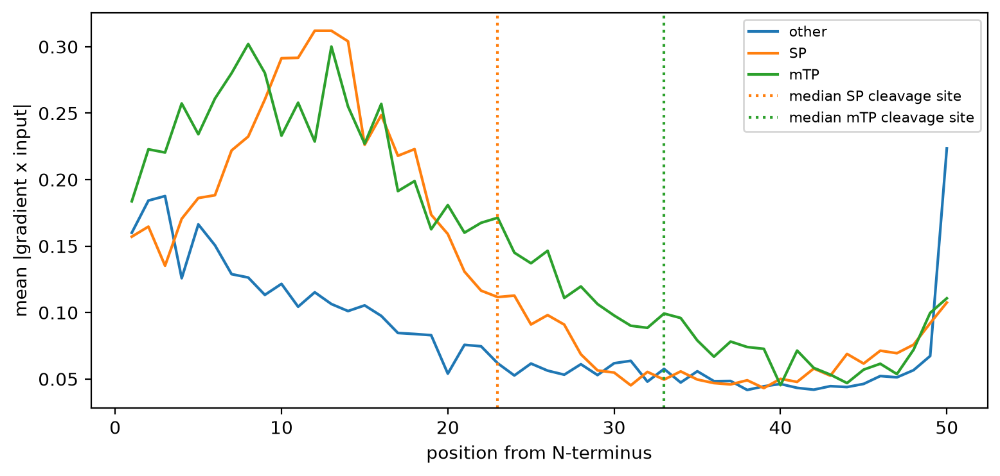

The gradient of the true-class score with respect to each input residue, times the input, averaged per class. It concentrates in the first ~25–30 residues. Saliency says where the model looks, not why.